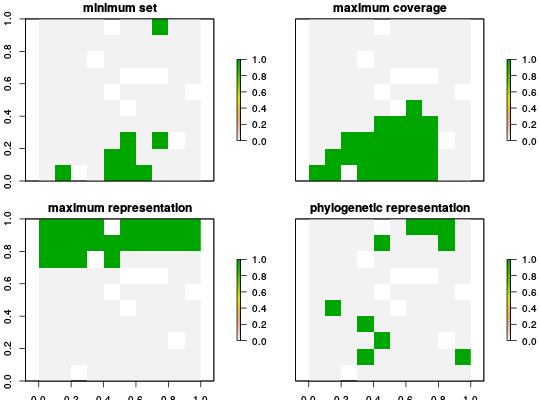

The problem objective specifies how the problem targets should
be used to generate a solution. All conservation planning problems require
an objective in order to be solved. See below for a list of the problem
objectives that are available.
add_minimum_set_objective(x) add_maximum_coverage_objective(x, budget) add_maximum_representation_objective(x, budget) add_phylogenetic_representation_objective(x, budget, tree) add_default_objective(x)
ConservationProblem object.numeric value specifying the maximum expenditure of
the prioritization.phylo object specifying a phylogenetic treeadd_minimum_set_objectiveadd_maximum_coverage_objectiveadd_maximum_representation_objectiveadd_phylogenetic_representation_objectivemaximum_targets_objective except that emphasis is
placed on preserving as much of a representative sample a phylogenetic
tree as possible given a budget. This objective requires the
"ape" R package to be installed.default_objectivelink{constraints}, link{problem},
targets.
# load data data(sim_pu_raster, sim_features, sim_phlyogeny)#> Warning: data set 'sim_phlyogeny' not found# create base problem p <- problem(sim_pu_raster, sim_features) %>% add_relative_targets(0.1) p1 <- p %>% add_minimum_set_objective() # create problem with added maximum coverage objective # note that this objective does not use targets p2 <- p %>% add_maximum_coverage_objective(5000) # create problem with added maximum targets objective p3 <- p %>% add_maximum_representation_objective(5000) # create problem with added phylogenetic representation objective p4 <- p %>% add_phylogenetic_representation_objective(5000, sim_phylogeny)#>#> Optimize a model with 5 rows, 90 columns and 450 nonzeros #> Variable types: 0 continuous, 90 integer (90 binary) #> Coefficient statistics: #> Matrix range [1e-01, 9e-01] #> Objective range [2e+02, 2e+02] #> Bounds range [1e+00, 1e+00] #> RHS range [2e+00, 7e+00] #> Found heuristic solution: objective 3332.3 #> Presolve time: 0.00s #> Presolved: 5 rows, 90 columns, 450 nonzeros #> Variable types: 0 continuous, 90 integer (90 binary) #> Presolved: 5 rows, 90 columns, 450 nonzeros #> #> #> Root relaxation: objective 1.782297e+03, 10 iterations, 0.00 seconds #> #> Nodes | Current Node | Objective Bounds | Work #> Expl Unexpl | Obj Depth IntInf | Incumbent BestBd Gap | It/Node Time #> #> 0 0 1782.29653 0 3 3332.29701 1782.29653 46.5% - 0s #> H 0 0 1807.7489997 1782.29653 1.41% - 0s #> #> Explored 0 nodes (10 simplex iterations) in 0.01 seconds #> Thread count was 1 (of 2 available processors) #> #> Solution count 2: 1807.75 3332.3 #> Pool objective bound 1782.3 #> #> Optimal solution found (tolerance 1.00e-01) #> Best objective 1.807748999681e+03, best bound 1.782296533661e+03, gap 1.4080%#> Warning: ignoring targets since the maximum coverage objective function doesn't use targets#> Optimize a model with 6 rows, 95 columns and 545 nonzeros #> Variable types: 5 continuous, 90 integer (90 binary) #> Coefficient statistics: #> Matrix range [1e-01, 2e+02] #> Objective range [1e-10, 1e+00] #> Bounds range [1e+00, 7e+01] #> RHS range [5e+03, 5e+03] #> Found heuristic solution: objective -0 #> Presolve removed 5 rows and 5 columns #> Presolve time: 0.00s #> Presolved: 1 rows, 90 columns, 90 nonzeros #> Variable types: 0 continuous, 90 integer (90 binary) #> Presolved: 1 rows, 90 columns, 90 nonzeros #> #> #> Root relaxation: objective 6.761769e+01, 1 iterations, 0.00 seconds #> #> Nodes | Current Node | Objective Bounds | Work #> Expl Unexpl | Obj Depth IntInf | Incumbent BestBd Gap | It/Node Time #> #> 0 0 67.61769 0 1 -0.00000 67.61769 - - 0s #> H 0 0 67.6033367 67.61769 0.02% - 0s #> #> Explored 0 nodes (1 simplex iterations) in 0.00 seconds #> Thread count was 1 (of 2 available processors) #> #> Solution count 2: 67.6033 -0 #> Pool objective bound 67.6177 #> #> Optimal solution found (tolerance 1.00e-01) #> Best objective 6.760333669903e+01, best bound 6.761768934159e+01, gap 0.0212% #> Optimize a model with 6 rows, 95 columns and 545 nonzeros #> Variable types: 0 continuous, 95 integer (95 binary) #> Coefficient statistics: #> Matrix range [1e-01, 2e+02] #> Objective range [1e-10, 1e+00] #> Bounds range [1e+00, 1e+00] #> RHS range [5e+03, 5e+03] #> Found heuristic solution: objective 5 #> #> Explored 0 nodes (0 simplex iterations) in 0.00 seconds #> Thread count was 1 (of 2 available processors) #> #> Solution count 1: 5 #> Pool objective bound 5 #> #> Optimal solution found (tolerance 1.00e-01) #> Best objective 5.000000002554e+00, best bound 5.000000009601e+00, gap 0.0000% #> Optimize a model with 14 rows, 103 columns and 565 nonzeros #> Variable types: 0 continuous, 103 integer (103 binary) #> Coefficient statistics: #> Matrix range [1e-01, 2e+02] #> Objective range [1e-10, 1e+00] #> Bounds range [1e+00, 1e+00] #> RHS range [5e+03, 5e+03] #> Found heuristic solution: objective 2.55364e-09 #> Presolve removed 5 rows and 5 columns #> Presolve time: 0.00s #> Presolved: 9 rows, 98 columns, 555 nonzeros #> Variable types: 0 continuous, 98 integer (98 binary) #> Presolved: 9 rows, 98 columns, 555 nonzeros #> #> #> Root relaxation: objective 3.002717e+00, 9 iterations, 0.00 seconds #> #> Nodes | Current Node | Objective Bounds | Work #> Expl Unexpl | Obj Depth IntInf | Incumbent BestBd Gap | It/Node Time #> #> 0 0 3.00272 0 1 0.00000 3.00272 - - 0s #> H 0 0 3.0027170 3.00272 0.00% - 0s #> #> Explored 0 nodes (10 simplex iterations) in 0.01 seconds #> Thread count was 1 (of 2 available processors) #> #> Solution count 2: 3.00272 2.55364e-09 #> Pool objective bound 3.00272 #> #> Optimal solution found (tolerance 1.00e-01) #> Best objective 3.002716982109e+00, best bound 3.002716982109e+00, gap 0.0000%# plot solutions plot(s, main=c('minimum set', 'maximum coverage', 'maximum representation', 'phylogenetic representation'))